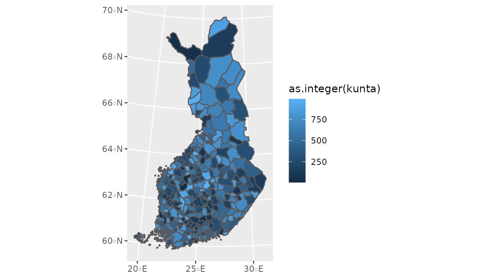
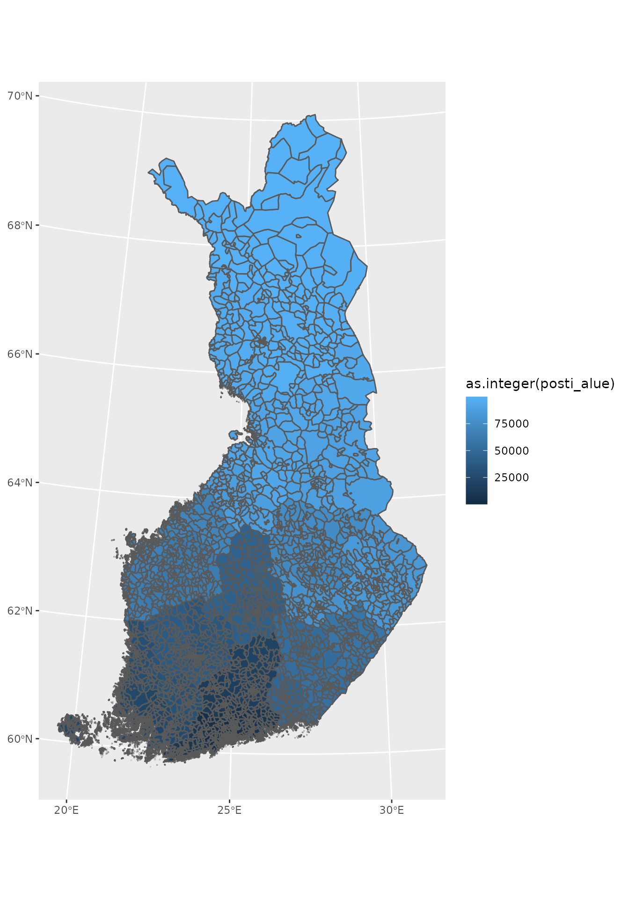
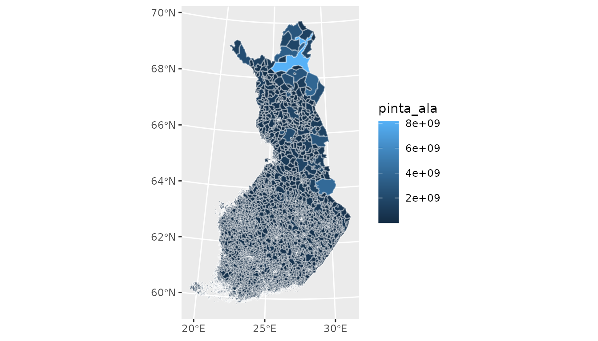
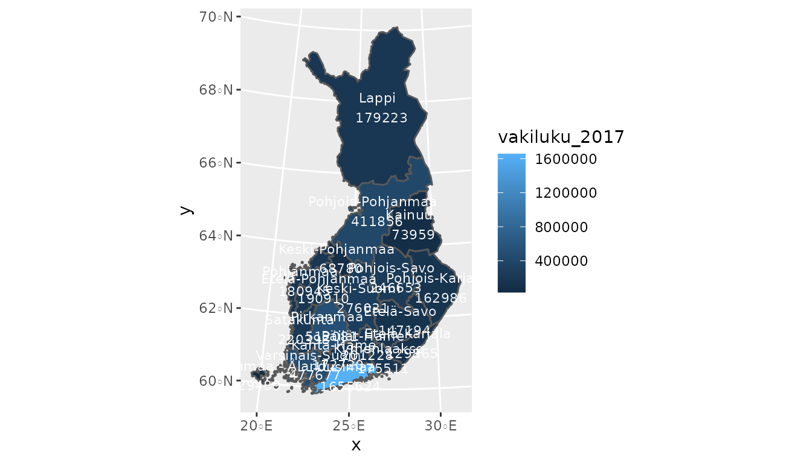
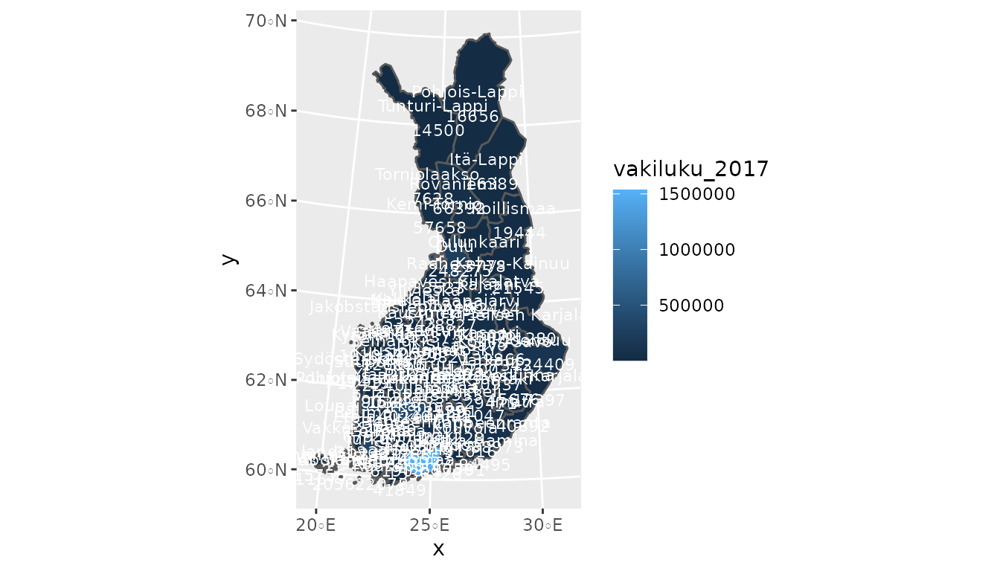
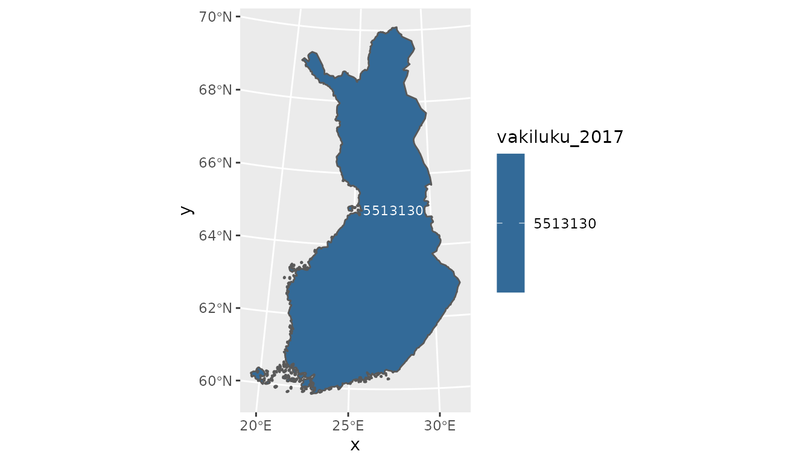

Making maps using geofi-package
Markus Kainu, Leo Lahti & Joona Lehtomäki
2021-02-08
Source:vignettes/geofi_making_maps.Rmd
geofi_making_maps.RmdInstallation
geofi is not yet in CRAN, but can be installed from Github using
remotes::install_github("ropengov/geofi")Municipalities
library(geofi)
#>
#> geofi R package: tools for open GIS data for Finland.
#> Part of rOpenGov <ropengov.org>.
library(ggplot2)
library(dplyr)
#>
#> Attaching package: 'dplyr'
#> The following objects are masked from 'package:stats':
#>
#> filter, lag
#> The following objects are masked from 'package:base':
#>
#> intersect, setdiff, setequal, union
library(janitor)
#>
#> Attaching package: 'janitor'
#> The following objects are masked from 'package:stats':
#>
#> chisq.test, fisher.test
library(tidyr)
municipalities <- get_municipalities(year = 2021, scale = 4500)
#> Requesting response from: http://geo.stat.fi/geoserver/wfs?service=WFS&version=1.0.0&request=getFeature&typename=tilastointialueet%3Akunta4500k_2021
#> Warning: Coercing CRS to epsg:3067 (ETRS89 / TM35FIN)
#> Data is licensed under: Attribution 4.0 International (CC BY 4.0)
ggplot(municipalities) +
geom_sf(aes(fill = as.integer(kunta)))
You can add the locations of central locality of each municipality with
ggplot(municipalities) +
geom_sf(aes(fill = as.integer(kunta))) +
geom_sf(data = municipality_central_localities, shape = 5, color = "white")
Zipcodes
zipcodes <- get_zipcodes(year = 2021)
#> Requesting response from: http://geo.stat.fi/geoserver/wfs?service=WFS&version=1.0.0&request=getFeature&typename=postialue%3Apno_2021
#> Warning: Coercing CRS to epsg:3067 (ETRS89 / TM35FIN)
#> Data is licensed under: Attribution 4.0 International (CC BY 4.0)
ggplot(zipcodes) +
geom_sf(aes(fill = as.integer(posti_alue)))
You can add variables from Paavo data (Statistics Finland) in following manner.
library(pxweb)
#> pxweb: R tools for PX-WEB API.
#> Copyright (C) 2014-2018 Mans Magnusson, Leo Lahti et al.
#> https://github.com/ropengov/pxweb
# lets get all zipcodes and all variables
pxweb_query_list <-
list("Postinumeroalue"=c("*"),
"Tiedot"=c("*"))
# Download data
px_data <-
pxweb_get(url = "http://pxnet2.stat.fi/PXWeb/api/v1/fi/Postinumeroalueittainen_avoin_tieto/2019/paavo_1_he_2019.px",
query = pxweb_query_list)
# Convert to data.frame
tk_data_zip <- as.data.frame(px_data, column.name.type = "text", variable.value.type = "text")
#> Warning in pxweb_as_data_frame.pxweb_data(x, row.names = row.names, optional =
#> optional, : NAs introduced by coercion
library(dplyr)
library(tidyr)
tk_data_zip2 <- tk_data_zip %>%
as_tibble() %>%
setNames(c("region","indicator","value")) %>%
spread(indicator, value)
tk_zipdata <- janitor::clean_names(tk_data_zip2)
tk_zipdata$zipcode <- substr(x = tk_zipdata$region, start = 1, stop = 5)
tk_zipdata$zipname <- gsub("^.{6}", "", tk_zipdata$region)
# Lets join with spatial data and plot the area of each zipcode
zipcodes19 <- get_zipcodes(year = 2019)
#> Requesting response from: http://geo.stat.fi/geoserver/wfs?service=WFS&version=1.0.0&request=getFeature&typename=postialue%3Apno_2019
#> Warning: Coercing CRS to epsg:3067 (ETRS89 / TM35FIN)
#> Data is licensed under: Attribution 4.0 International (CC BY 4.0)
zipcodes_new <- left_join(zipcodes19, tk_zipdata, by = c("posti_alue" = "zipcode"))
ggplot(zipcodes_new) +
geom_sf(aes(fill = pinta_ala), color = alpha("white", 1/3))
Joining municipality level data from Statistics Finland pxweb-api
municipalities17 <- get_municipalities(year = 2017)
#> Requesting response from: http://geo.stat.fi/geoserver/wfs?service=WFS&version=1.0.0&request=getFeature&typename=tilastointialueet%3Akunta4500k_2017
#> Warning: Coercing CRS to epsg:3067 (ETRS89 / TM35FIN)
#> Data is licensed under: Attribution 4.0 International (CC BY 4.0)
# pull municipality data from Statistics Finland
library(pxweb)
pxweb_query_list <-
list("Alue 2019"=c("*"),
"Tiedot"=c("M408","M411","M476","M391","M421","M478","M404","M410","M303","M297","M302","M44","M62","M70","M488","M486","M137","M140","M130","M162","M78","M485","M152","M72","M84","M106","M151","M499","M496","M495","M497","M498"),
"Vuosi"=c("2017"))
px_data <-
pxweb_get(url = "http://pxnet2.stat.fi/PXWeb/api/v1/fi/Kuntien_avainluvut/2019/kuntien_avainluvut_2019_aikasarja.px",
query = pxweb_query_list)
# Convert to data.frame
tk_data <- as.data.frame(px_data, column.name.type = "text", variable.value.type = "text")
tk_data2 <- tk_data %>%
rename(name = `Alue 2019`) %>%
mutate(name = as.character(name),
# Paste Tiedot and Vuosi
Tiedot = paste(Tiedot, Vuosi)) %>%
select(-Vuosi) %>%
spread(Tiedot, `Kuntien avainluvut`) %>%
as_tibble()
tk_data3 <- janitor::clean_names(tk_data2)
# Join with Statistics Finland attribute data
dat <- left_join(municipalities17, tk_data3)
#> Joining, by = "name"
dat[1:10,1:10]
#> Simple feature collection with 10 features and 10 fields
#> geometry type: MULTIPOLYGON
#> dimension: XY
#> bbox: xmin: 83747.59 ymin: 6690809 xmax: 610975.5 ymax: 7133254
#> projected CRS: ETRS89 / TM35FIN(E,N)
#> gml_id vuosi kunta nimi namn name
#> 1 kunta4500k_2017.1 2017 5 Alajärvi Alajärvi Alajärvi
#> 2 kunta4500k_2017.2 2017 9 Alavieska Alavieska Alavieska
#> 3 kunta4500k_2017.3 2017 10 Alavus Alavus Alavus
#> 4 kunta4500k_2017.4 2017 16 Asikkala Asikkala Asikkala
#> 5 kunta4500k_2017.5 2017 18 Askola Askola Askola
#> 6 kunta4500k_2017.6 2017 19 Aura Aura Aura
#> 7 kunta4500k_2017.7 2017 20 Akaa Akaa Akaa
#> 8 kunta4500k_2017.8 2017 35 Brändö Brändö Brändö
#> 9 kunta4500k_2017.9 2017 43 Eckerö Eckerö Eckerö
#> 10 kunta4500k_2017.10 2017 46 Enonkoski Enonkoski Enonkoski
#> municipality_name_fi municipality_name_sv municipality_name_en
#> 1 Alajärvi Alajärvi Alajärvi
#> 2 Alavieska Alavieska Alavieska
#> 3 Alavus Alavus Alavus
#> 4 Asikkala Asikkala Asikkala
#> 5 Askola Askola Askola
#> 6 Aura Aura Aura
#> 7 Akaa Akaa Akaa
#> 8 Brändö Brändö Brändö
#> 9 Eckerö Eckerö Eckerö
#> 10 Enonkoski Enonkoski Enonkoski
#> kuntaryhmitys_code geom
#> 1 2 MULTIPOLYGON (((348733.2 69...
#> 2 3 MULTIPOLYGON (((370424.7 71...
#> 3 3 MULTIPOLYGON (((317245.3 69...
#> 4 2 MULTIPOLYGON (((434407.9 67...
#> 5 3 MULTIPOLYGON (((423421.8 67...
#> 6 3 MULTIPOLYGON (((255415.5 67...
#> 7 2 MULTIPOLYGON (((324952.6 67...
#> 8 3 MULTIPOLYGON (((176037.2 67...
#> 9 3 MULTIPOLYGON (((86806.42 66...
#> 10 3 MULTIPOLYGON (((598384.5 68...Aggregating municipality level data using internal municipality_key-files
# Lets aggregate at maakunta level using column mk_name
mk_data <- dat %>%
group_by(maakunta_name_fi,maakunta_code) %>%
# And compute population at maakunta level
summarise(vakiluku_2017 = sum(vakiluku_2017))
#> `summarise()` has grouped output by 'maakunta_name_fi'. You can override using the `.groups` argument.
ggplot(mk_data) +
geom_sf(aes(fill = vakiluku_2017)) +
geom_sf_text(aes(label = paste(maakunta_name_fi, "\n",vakiluku_2017)),
size = 3,
color = "white")
Or if you prefer aggregating at seutukunta-level you can
mk_data <- dat %>%
group_by(seutukunta_code,seutukunta_name_fi) %>%
# And compute population at maakunta level
summarise(vakiluku_2017 = sum(vakiluku_2017))
#> `summarise()` has grouped output by 'seutukunta_code'. You can override using the `.groups` argument.
ggplot(mk_data) +
geom_sf(aes(fill = vakiluku_2017)) +
geom_sf_text(aes(label = paste(seutukunta_name_fi, "\n",vakiluku_2017)),
size = 3,
color = "white")
Or if you want the population at the national level aggregated up from municipality level you can:
mk_data <- dat %>%
summarise(vakiluku_2017 = sum(vakiluku_2017))
ggplot(mk_data) +
geom_sf(aes(fill = vakiluku_2017)) +
geom_sf_text(aes(label = vakiluku_2017),
size = 3,
color = "white")
Helsinki at 1km by 1km as interactive leaflet map
library(leaflet)
pop_grid <- get_population_grid(year = 2018, resolution = 1)
#> Requesting response from: http://geo.stat.fi/geoserver/wfs?service=WFS&version=1.0.0&request=getFeature&typename=vaestoruutu%3Avaki2018_1km
#> Warning: Coercing CRS to epsg:3067 (ETRS89 / TM35FIN)
#> Data is licensed under: Attribution 4.0 International (CC BY 4.0)
pop_grid_helsinki <- sf::st_transform(x = pop_grid %>%
filter(kunta == "091"), crs = "+proj=longlat +datum=WGS84")
leaflet(pop_grid_helsinki) %>%
addTiles() %>%
addPolygons(fillColor = ~colorQuantile("RdYlGn", vaesto)(vaesto),
color = "coral",
weight = 1,
smoothFactor = 0.5,
opacity = 1.0,
fillOpacity = 0.5,
label = ~vaesto,
highlightOptions = highlightOptions(color = "white", weight = 2,
bringToFront = TRUE))
dat <- left_join(geofi::municipality_key_2019 %>%
filter(maakunta_name_fi == "Ahvenanmaa") %>%
select(-year),
px_data) %>%
group_by(maakunta_code, maakunta_name_fi,year) %>%
rename(code = kunta, name = kunta_name, population = value)
library(geofacet)
library(ggplot2)
ggplot(dat, aes(x = year, y = population/1000, group = name)) +
geom_line() +
facet_geo(facets = ~name, grid = grid_ahvenanmaa_2019, scales = "free_y") +
theme(axis.text.x = element_text(size = 6)) +
scale_x_discrete(breaks = seq.int(from = 1987, to = 2018, by = 5)) +
labs(title = "Population 1987-2018", y = "population (1000)")